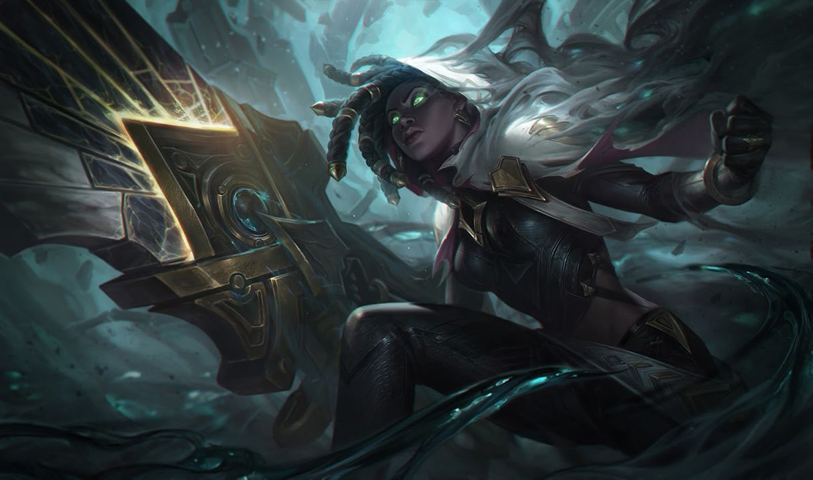

세나
세나
세나, 구원자
Senna, the Redeemer

1. 배경
2. 스킬
2.1. 패시브 - 면죄(Absolution)
흡수된 안개 하나당 0.75의 공격력을 얻습니다. 20개 흡수할 때마다 공격 사거리가 20, 치명타 확률이 10% 증가합니다.[11] 치명타 확률이 최대치를 초과하는 경우 35%만큼 생명력 흡수율로 변환됩니다.
세나의 공격 속도가 느려지고 [12], 0.2 총 공격력의 물리 피해를 추가로 입히며, 잠시[13] 공격 대상의 이동 속도를 흡수합니다.[14]
2.2. Q - 꿰뚫는 어둠(Piercing Darkness)
기본 공격 시 스킬의 재사용 대기시간이 1초 감소합니다.
2.3. W - 마지막 포옹(Last Embrace)
2.4. E - 검은 안개의 저주(Curse of the Black Mist)
적들은 망령을 볼 수 있지만 정체는 알 수 없습니다. 그 외에는 위장 상태인 것으로 간주됩니다.
위장 상태일 때는 적 챔피언의 감지 범위 안에 들어가지 않는 한 시야에 보이지 않습니다.
지정할 수 없는 상태에서는 대상이 필요한 스킬이나 기본 공격의 대상이 될 수 없습니다.
2.4. R - 여명의 그림자(Dawning Shadow)
3. 장점
이론상 무한에 가까운 성장성
뛰어난 유틸리티
멀티 포지션
강한 압박 능력과 우수한 스노우볼링
공격형 서포터이지만 성장이 필수가 아님 (서포터)
원거리 역할군 중 쉬운 조작 난이도
다재다능함과 무한한 성장력에 기반한 다양한 아이템 빌드
4. 단점
물리면 취약한 뚜벅이
포킹에 취약함
극악의 라인전 상성 (서포터)
부족한 보호 능력 (서포터)
탱커 처리와 라인 클리어에 불리한 낮은 DPS (바텀)
높은 초반 성장 리스크와 스노우볼링 의존도 (바텀)
종합적으로 대부분의 원딜과 궁합이 나쁨 (서포터)

저작물은 CC BY-NC-SA 2.0 KR에 따라 이용할 수 있습니다. (단, 라이선스가 명시된 일부 문서 및 삽화 제외)